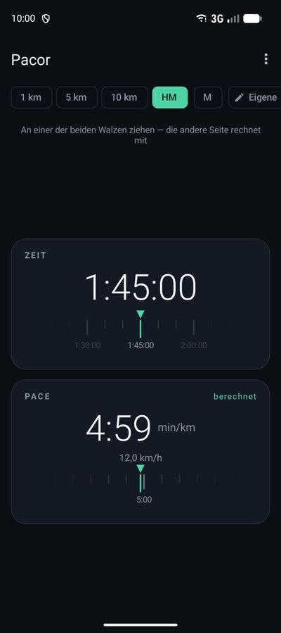
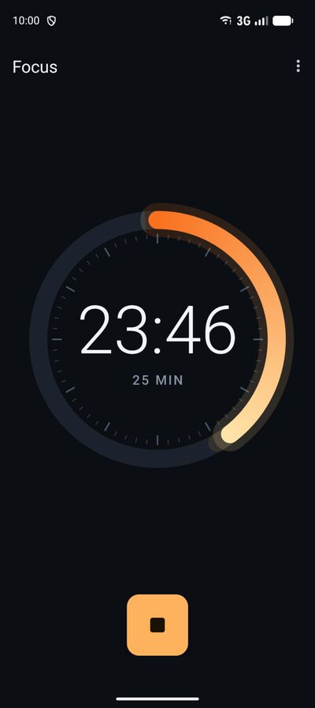
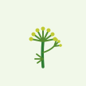
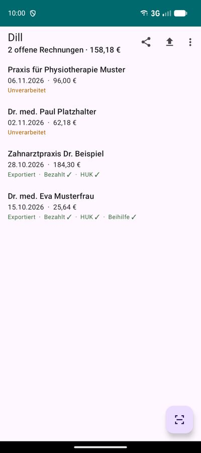

Apps für den Alltag
Kleine Android-Apps, entstanden für den Hausgebrauch: zum Laufen, zum Konzentrieren – bei den Hausaufgaben genauso wie am Schreibtisch – und für den Papierkram. Kostenlos, ohne Werbung und ohne Konto – gespeichert wird nur auf dem eigenen Gerät.
Pacor
Pace-Rechner · für Android
Zielzeit oder Pace vorgeben, die andere Seite rechnet mit – einfach an einer Walze ziehen.
- 1 km, 5 km, 10 km, Halbmarathon, Marathon oder eigene Strecke
- Pace mit km/h, Rastung passend zur Strecke
- Ohne Internet und ohne Berechtigungen

Focus
Konzentrationstimer · für Android
Dauer am Ring einstellen wie bei einer Küchenuhr, starten – am Ende klingelt das Handy.
- Ein voller Ring ist eine Stunde, eingestellt wird minutengenau
- Schnellwahl von 5 Minuten bis zu einer Stunde
- Klingelt zuverlässig, auch im Stromsparmodus


Dill
Arztrechnungen · für Android
Rechnung abfotografieren, Datum, Praxis und Betrag auslesen lassen und an die Apps von HUK und Beihilfe weiterreichen.
- Scan und Texterkennung laufen auf dem Handy
- Häkchen für bezahlt und eingereicht, Summe der offenen Rechnungen
- Frühe Version, braucht die Google-Play-Dienste zum Scannen
